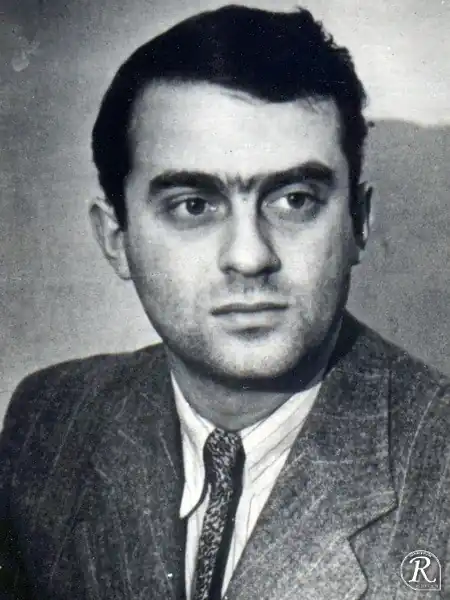
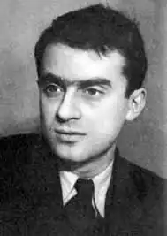
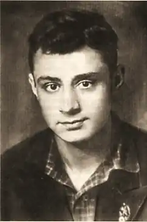

Гудзенко Семен Петрович (5.03.1922-12.02.1953), поет. Народився в сім'ї інженера-будівельника, в 1939-41 вчився в Московському історико-філософському і літературному інституті, в липні 1941 пішов добровольцем на фронт, брав участь в боях під Москвою, взимку 1942 складі лижного загону воював в Смоленській обл., Де був поранений ; пізніше працював літсотрудніком військової газети. Перші вірші Гудзенко опублікував в армійській пресі в 1941. У наступні роки вийшли його книги "Однополчани" (1944), "Вірші і балади" (1945), "Після маршу" (1947), "Закарпатські вірші" (1948), "Битва "(1948)," Далекий гарнізон. Поема "(1953)," Нові краю "(1953).
Найбільш значними в творчості удзенко є його фронтові вірші і балади. У вірші "Перед атакою" поет виразно і правдиво розповів про психологічний стан солдата перед боєм: "Коли на смерть йдуть, — співають, / А перед цим можна плакати. / Адже найстрашніший годину в бою — / год очікування атаки ... Мені здається, що я магніт, / Що я притягую міни. / Розрив — і лейтенант хрипить. / І смерть знову проходить повз. / Але ми вже не в силах чекати. / І нас веде через траншеї / закляклі ворожнеча, / Багнетом дирявящая шиї. / Бій був короткий. А потім / Глушили горілку крижану / І виколупував ножем / З-під нігтів я кров чужу ".
Серед балад Гудзенко виділяється своєю психологічною проникливістю і достовірністю "Балада про дружбу" (1942-43) і "На снігу білизни госпітальної ..." (1945). Фронтова дружба перевіряється трагедійним, але добровільним вибором: кому з друзів йти на бойове завдання, з якого важко повернутися живим: "Не дарма ми дружбу берегли, / Як піхотинці бережуть / Метр закривавленою землі, / Коли його в боях беруть". У баладі "На снігу білизни госпітальної ..." Гудзенко розповів про самовідданість військового лікаря, який, рятуючи інших, гине сам: "... Одну людину не врятував військовий лікар — / Він лежить на снігу білизни госпітальної". Ліричну проникливість баладі надає звернення поета до дівчини з проханням не плакати про своє ненаглядного і милому, хоча поет і відчуває, що про такий самовідданий людині, як загиблий військовий лікар, не плакати не можна. У вірші "Ми не від старості помремо, — / Від старих ран помремо ми" Гудзенко не тільки передбачив свою ранню смерть, але і сказав, від чого будуть вмирати інші фронтовики.